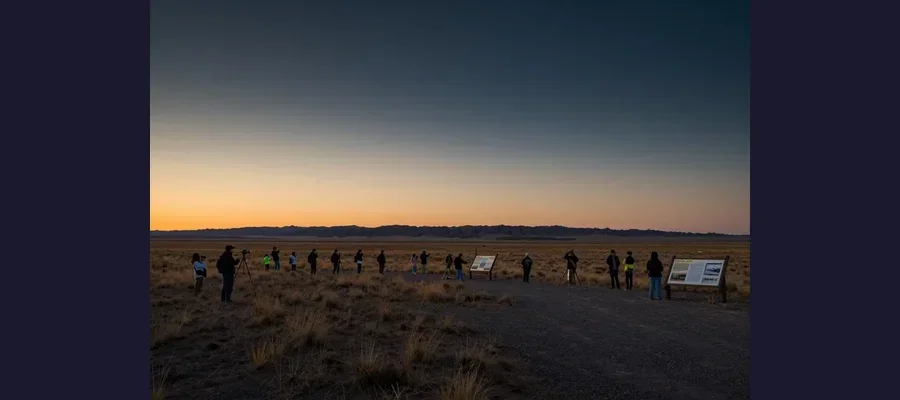
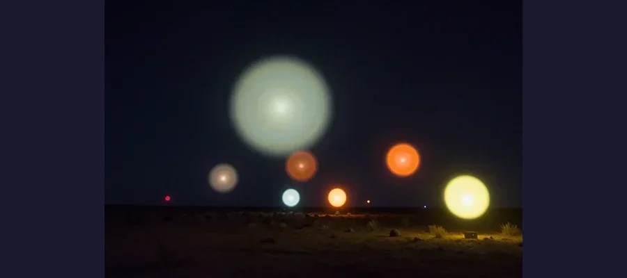

The Marfa Lights: Texas Desert's Glowing Mystery

Glowing orbs of light have appeared regularly in the West Texas desert for over 140 years. Despite scientific studies, no one can fully explain the Marfa Lights.
In the vast, empty desert near Marfa, Texas, something strange happens after dark. Bright orbs of light appear in the distance, hovering, merging, splitting, and changing colors — white, yellow, orange, red, and occasionally blue. They dance across the Mitchell Flat east of the Chinati Mountains, sometimes near the ground, sometimes high in the air.
The first recorded sighting dates to 1883, when a young rancher named Robert Reed Ellison saw the lights while driving cattle through the area. Assuming they were Apache campfires, he investigated the next morning but found no ashes, no charcoal, no trace of any fire.
Over the decades, hundreds of reliable witnesses — including ranchers, Border Patrol agents, geologists, and scientists — have reported seeing the lights. They appear most frequently between dusk and midnight, though they've been observed at all hours and in all seasons.
Evidence
Multiple scientific studies have attempted to document and explain the Marfa Lights.
- 🔭 University of Texas study (2004): A team from UT Dallas set up equipment and observed lights on multiple nights. They concluded that some sightings could be explained by car headlights on US Highway 67, but acknowledged that other sightings remained unexplained.
- 📸 Photographic evidence: The lights have been photographed and filmed by numerous witnesses. They appear as bright, stationary or slowly moving orbs that can persist for minutes or hours.

The official Marfa Lights Viewing Area on Highway 90, nine miles east of Marfa, Texas
🚗 Predates Cars by Decades
The earliest documented sighting was in 1883 — 20 years before the first automobile. While headlights may explain some modern sightings, they cannot explain the original reports from the 19th century.
Competing Explanations
Several theories compete to explain the Marfa Lights, each with strengths and weaknesses.
Car headlights on Highway 67: The 2004 UT Dallas study showed that atmospheric conditions in the desert — particularly temperature inversions — can bend light over the horizon through a mirage effect called "Fata Morgana," making distant headlights appear as floating orbs. This explains some sightings but not the 1883 reports (20 years before cars).

Witnesses describe lights that merge, split, change colors, and move in ways inconsistent with vehicle headlights
Atmospheric refraction: Light from distant stars, cities, or other sources could be refracted by the unusual atmospheric conditions in the high desert. This would explain the color changes and movement patterns.
Piezoelectric effect: The quartz-rich rocks in the area, when put under pressure by geological forces, could generate electrical discharges that produce visible light — similar to earthquake lights observed elsewhere.
🌟 Official State Attraction
Texas built a dedicated roadside viewing area on Highway 90 with interpretive signs. The annual Marfa Lights Festival celebrates the phenomenon every Labor Day weekend, drawing thousands of visitors to this tiny town of 1,700 people.
Open Questions
The Marfa Lights continue to attract scientists and tourists alike, with key questions still unanswered.
Are there two types of lights? Some researchers believe the phenomenon has both an explainable component (headlights/refraction) and an unexplained component that behaves differently — changing colors rapidly, splitting, and merging.
Why only here? If the lights are caused by atmospheric conditions, why are they so consistent in this specific location? The unique geography of the Chihuahuan Desert and the Mitchell Flat may create conditions not found elsewhere.
Whether optical illusion or genuine mystery, the Marfa Lights remain one of America's most captivating unexplained phenomena!
📖 Recommended Reading
Want to learn more? Check out Mysteries and Miracles of Texas: Guidebook to the Genuinely Bizarre on Amazon for a deeper dive into this fascinating topic. (As an Amazon Associate, we earn from qualifying purchases.)
References & Further Reading
- Wikipedia: Marfa Lights
- Texas State Historical Association: Marfa Lights
- National Park Service: Marfa Lights
- Scientific American: Marfa Ghost Lights
Editorial note: reconstructions are continuously revised as imaging and inscription studies improve. See our Editorial Policy.